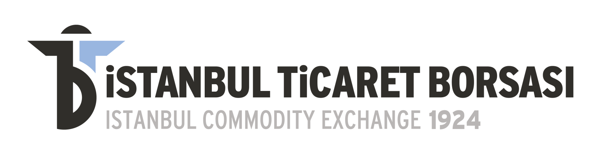

İstanbul’a Özgü Coğrafi İşaretler
İstanbul’un Değerlerini Tescilliyoruz
İstanbul Ticaret Borsası olarak, kadim şehrimizin kültürel ve ekonomik mirasını yaşatmak amacıyla hayata geçirdiğimiz “İstanbul’a Özgü Coğrafi İşaretler” projemiz ile şehrimize özgü ürünleri tüm yönleriyle tespit ediyor, ilgili paydaşlarımızla iş birliği içinde titizlikle değerlendiriyoruz. Bu ürünlerin hem ulusal hem de Avrupa Birliği düzeyinde coğrafi işaret tescil süreçlerini takip ederek, İstanbul’un yerel değerlerinin markalaşmasına, katma değer kazanmasına ve pazarda hak ettiği yeri almasına liderlik ediyoruz.
Kültürel miras
Ulusal ve AB tescili
Yerel markalaşma
Proje yürütücüsü

Coğrafi işaret amblemleri
Menşe adı · Mahreç işareti · Geleneksel ürün adı
Coğrafi İşaret Bilgilendirmeleri
Eminönü Balık Ekmeği Coğrafi İşareti İle İlgili Belgeler